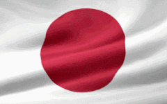

Japonia
Xmas w Japonii
Okres Świąt bożego narodzenia w japonii nazywa sie Kurisumasu, i zaczyna sie w połowie listopada. Mieszkańcy Kraju Kwitnącej Wiśni trawktują je bardziej jako czas rozrywki, a przede wszystkim czas komercyjny. Mało osób jest tam wierzących, dlatego nie ma przeciwskazań jak rodziny nogą obchodzić te święta. Japonia przerobiła święta bożego narodzenia znanego na całym świecie, aby te wpasowyway sie do ich klimatu. Wielu mieszkańców wysyła sobie kartki świąteczne.
Kurisumasu, odpowiednik Świąt Bożego Nrodzenia, kojarzony jest nie tylko z czasu spedzania go z rodzinną i radosną atmosferą, zakupami, ale również gloryfikacji uczuć, zaraz po walentynkach.
Japońska wigilia to Uroczysta kolacja podczas której rodziny spedzaja wspólnie czas. Na wigilijnym stole w Japonii nie ma 12 potraw. pojawiają się tak zwane „christmas cake” świąteczne, bardzo słodkie ciasto podawane w formie kolorowego, udekorowanego cukrowymi postaciami deseru oraz pieczony kurczak. Zwyczaj ten wziął sie z ameryki, która przekonała japonie że jedzenie kurczaka na zachodzie to tradycja podczas wigilijnej kolacji, dlatego też w ten dzień Japończycy jedzą kurczki głównie z KFC.
Tradycje
Tradycje Bożo Narodzeniowe w Japonii nie zabardzo różnią się od inych krajów, mimo iż obchodzą te święta bardziej na tle komercyjnym i rozrywkowym niż religinym. Oto kilka z nich:
- Oświetlenie i dekoracje uliczne- miasta i sklepy w Japonii są ozdobione tysiącami światełek, dekoracjami oraz tradycyjnymi ozdobami świątecznymi.
- Kolacja romantyczna - często traktowane jako dzień romantyczny dla par. Wiele par decyduje się na kolację w ekskluzywnych restauracjach.
- Prezenty- ludzie obdarowują się nawzajem prezentami, by wyrazić swoją miłość i szacunek.
- KFC jako tradycyjne danie świąteczne- zamawianie kurczaka z KFC w czasie Bożego Narodzenia. KFC stało się symbolem świątecznego posiłku.
- Używanie świątecznych ozdób- Japończycy dekorują swoje domy świątecznymi ozdobami, włączając w to choinki i inne dekoracje.
- zakupy, wydarzenia- sklepy oferują specjalne promocje, a miasta organizują różnorodne wydarzenia i pokazy.
Te tradycje stanowią część kultury Bożego Narodzenia w Japonii, gdzie mieszają się różne smaki, tworząc wyjątkową atmosferę świąteczną, podczas spedzania go w towarzystwie najbliższych, ukochanych.
święta = wspólnota, zarobki
Oprócz tradycji i potraw, Boże Narodzenie w Japonii daje:
- Świąteczna muzyka i koncerty- wiele miejsc publicznych odtwarzają świąteczne melodie, co dodatkowo tworzy świąteczny nastrój.
- Illuminacje świąteczne - parki, ogrody botaniczne organizują specjalne pokazy światełek, co staje się atrakcją dla turystów i mieszkańców.
- Świąteczne karty i prezenty- Japończycy wysyłają świąteczne kartki z życzeniami bliskim osobom.
- Bożonarodzeniowe reklamy i promocje- firmy wykorzystują tę okazję do wydawania specjalnych produktów, a także organizowania wyjątkowych kampanii marketingowych, które przyciągają uwagę klientów.
- Zajęcia i warsztaty tematyczne- Szkoły, przedszkola czy centra kulturalne organizują zajęcia plastyczne, warsztaty i aktywności tematyczne związane z Bożym Narodzeniem.
Boże narodzenie w Japonii to czas spędzania czasu z wspólocie ludzi, cieszenia się zimową atmosferą.